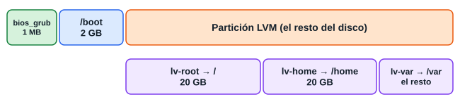

Sigue los 15 pasos de la guía del aula. He cambiado la red y las particiones, porque tal como vienen no funcionarían: lo explico en cada paso. Los nombres de los menús pueden variar un poco según tu versión.
| Necesitas | Valor |
|---|---|
| Programa | Oracle VirtualBox 7.2 o posterior, desde virtualbox.org |
| Sistema | Ubuntu Server 26.04 LTS |
| Memoria para la VM | 2048 MB |
| Disco libre | 50 GB, aunque se ocupa poco a poco |
| Virtualización | Activada en la BIOS: Intel VT-x o AMD-V |
Mac con chip M1 o posterior: esta guía es para ordenadores Intel o AMD, porque la ISO amd64 no sirve en esos Mac. Hazla en un PC, o busca la ISO arm64 de Ubuntu Server, sabiendo que no será igual que en clase.
Ubuntu 26.04 LTS tiene soporte hasta abril de 2031.
Baja ubuntu-26.04.1-live-server-amd64.iso desde la página oficial.
La guía del aula nombra ubuntu-26.04-live-server-amd64.iso. Las dos son 26.04; la .1 ya trae actualizaciones, y es la que recomiendo.
En VirtualBox, pulsa Nueva.
| Campo | Valor |
|---|---|
| Nombre | svr-daw00 |
| Imagen ISO | La que has bajado |
| Tipo | Linux |
| Versión | Ubuntu (64-bit) |
| Instalación desatendida | Desactivada, para hacer tú cada paso |
| Memoria base | 2048 MB |
| Procesadores | 2 |
| Disco duro | 50 GB, VDI, reservado dinámicamente |
| EFI | Desactivado, para que coincida con esta guía |
En Configuración → Almacenamiento, comprueba que la ISO está en la unidad óptica (IDE) y el disco VDI en SATA.
En Configuración → Red → Adaptador 1, elige Adaptador puente.
Este cambio es imprescindible para el paso 15. Con el NAT por defecto, la VM recibe algo como 10.0.2.15 y tu ordenador no puede hacerle ping ni entrar por SSH.
Muchas wifi lo bloquean. Deja NAT, abre Avanzadas → Reenvío de puertos y añade una regla:
| Protocolo | Puerto anfitrión | Puerto invitado |
|---|---|---|
| TCP | 2222 | 22 |
Luego conéctate con:
ssh -p 2222 alumno@127.0.0.1
Pulsa Iniciar. En el menú elige Try or Install Ubuntu Server y espera. El cursor se mueve con las flechas y el tabulador, y Enter acepta.
Elige Español. En el teclado, Layout Spanish y Variant Spanish. Si te ofrece actualizar el instalador, puedes continuar sin hacerlo.
En el tipo de instalación deja Ubuntu Server (es el paso 10 de la guía del aula; aparece aquí).
El instalador coge el idioma de teclado y la zona por la red. Si después la hora no coincide:
sudo timedatectl set-timezone Europe/Madrid
Deja DHCP. Apunta la dirección que aparece: en esta guía usamos 192.168.1.100 de ejemplo, pero la tuya será otra. Deja vacío el proxy y acepta el espejo (mirror) que propone.

La guía del aula pide / 20 GB, /home 20 GB y /var 10 GB. Eso suma los 50 GB exactos, pero también hace falta sitio para el arranque. Por eso /var se queda con lo que sobre, unos 8 GB.
Elige Custom storage layout y haz esto:
2G, formato ext4, montaje /boot.ubuntu-vg, marca esa partición.lv-root, 20G, ext4, montaje /.lv-home, 20G, ext4, montaje /home.lv-var, tamaño vacío, ext4, montaje /var.| Campo | Valor |
|---|---|
| Tu nombre | Nombre alumno |
| Nombre del servidor | svr-daw00 |
| Usuario | alumno |
| Contraseña | Una que elijas tú y recuerdes |
Si aparece Ubuntu Pro, elige Skip for now.
Lo elegiste en el paso 5. Si por error marcaste *minimized*, vuelve atrás con Back antes de empezar a instalar.
Marca Install OpenSSH server con la barra espaciadora. No necesitas importar claves. En *Featured server snaps* no marques nada.
Se instala y descarga actualizaciones. Tarda unos minutos. Cuando acabe verás Reboot Now.
Pulsa Reboot Now. Si te dice *Please remove the installation medium*, pulsa Enter. Si vuelve a salir el instalador, apaga la VM y quita la ISO en Configuración → Almacenamiento.
Tras los mensajes de arranque, entra con alumno y tu contraseña. Al escribir la contraseña no se ve nada: es normal.
Actualiza:
sudo apt update sudo apt full-upgrade -y
En la VM, averigua tu IP y revisa el sistema:
ip a uname -a lsb_release -a df -h sudo systemctl status ssh
En Ubuntu reciente, ssh puede salir *inactive* con TriggeredBy: ssh.socket hasta la primera conexión. No es un error: el servicio arranca cuando alguien se conecta.
En tu ordenador, con tu IP en vez de la del ejemplo:
ping 192.168.1.100 ssh alumno@192.168.1.100
En Windows, para ping usa PowerShell o CMD, y ssh ya viene incluido.
lsb_release -a dice Ubuntu 26.04.df -h muestra /, /home y /var en volúmenes separados.ping responde.Con la VM apagada, haz una instantánea llamada «limpia». Así podrás volver aquí si rompes algo.
| Problema | Solución |
|---|---|
| VT-x/AMD-V no disponible | Activa la virtualización en la BIOS/UEFI. En Windows, Hyper-V o WSL pueden influir |
| Ping sin respuesta | Comprueba el Adaptador puente y la IP con ip a |
| Connection refused por SSH | Instala con sudo apt install openssh-server |
| Vuelve a salir el instalador | Quita la ISO de la unidad óptica |
| Teclado cambiado | sudo dpkg-reconfigure keyboard-configuration |
/var se llena | Es pequeño: con LVM se puede ampliar si añades disco |
ssh directo a la VM?df -h (y lsblk para ver la estructura).sudo hostnamectl set-hostname ...) y la dirección MAC (generar una nueva al clonar), para que no choquen en la red.